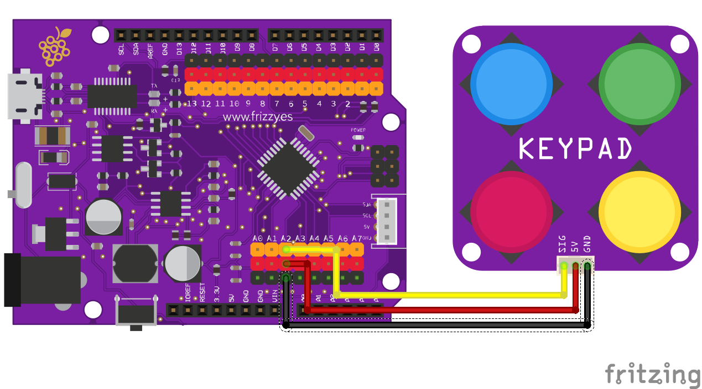

Elemental Kit - Módulo Keypad

El módulo keypad contiene cuatro interruptores de 12mm conectados a cutro resistencias con diferentes valores para que puedas operar los 4 botones ¡con solo un pin analogico de tu placa! El conector de salida es el correspondiente JST-PH de 2.0mm compatible con los cables para la Grape.
Características
- 4 botones de diferentes colores
- Utiliza la clásica conexión "GND/VCC/SIG"
- Incluye una resistencia diferente para cada botón
##Primeros pasos
Grape

| Grape | Elemental - keypad |
|---|---|
| GND | Negro |
| 5V | Rojo |
| A2 | Amarillo |
void setup() {
Serial.begin(9600); //Iniciamos el puerto serie a 9600 baudios
}
void loop(){
// leemos el estado de nuestra botonera y lo almacenamos en la variable
botonera = analogRead(A2);
Serial.println(botonera);
}
##Recursos
Licencia
Copyright © 2018-2017 Frizzy Electronics. (https://www.frizzy.es). Todo el texto y las fotografías bajo licencia Creative Commons Attribution-ShareAlike 4.0 International License.
Soporte Técnico
Por favor, comunicanos cualquier incidencia para poder mejorar juntos. Escribenos a frizzy.info@gmail.com.